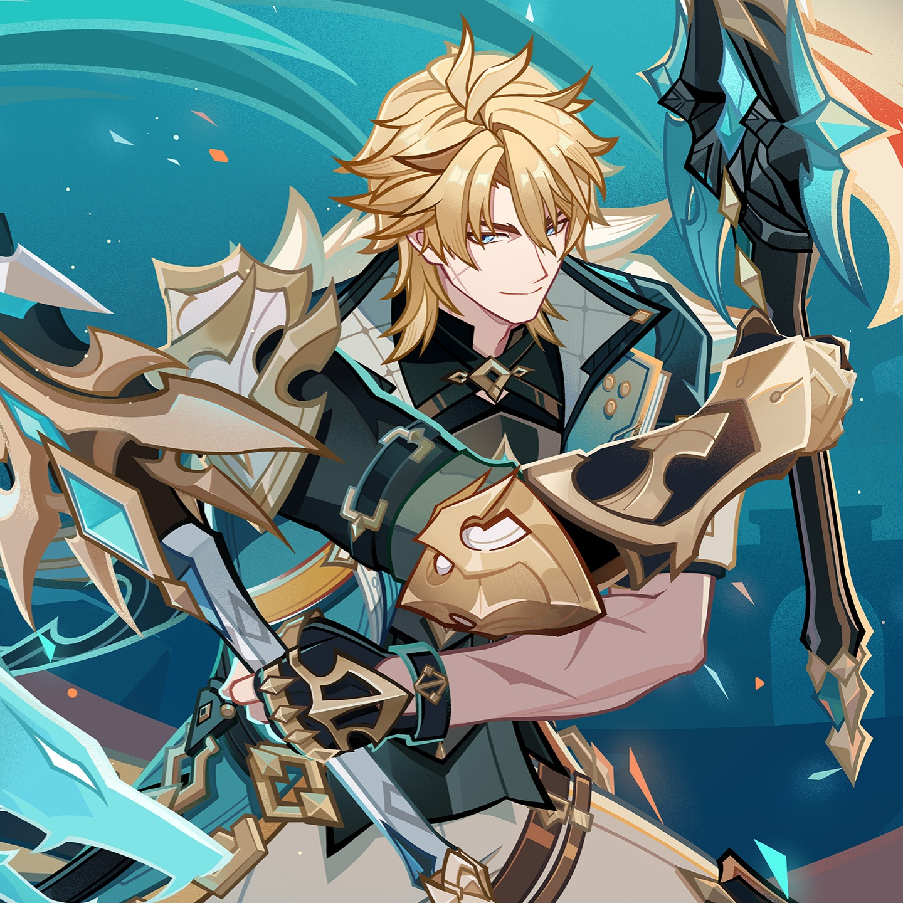

SANDS
ATK%
GOBLET
ATK% / Elemental DMG%
CIRCLET
CRIT Rate / CRIT DMG

Varka establishes a distinct identity as an Anemo carry that bypasses standard Elemental Mastery stacking in favor of pure ATK scaling. Operating as a flexible PHEC (Pyro/Hydro/Electro/Cryo) driver, his damage is concentrated heavily in his Elemental Skill state. By dual-wielding claymores during Sturm und Drang, he dishes out rapid elemental-infused slashes that scale off his party composition and Hexerei team synergies.
Elemental Skill (Windbound Execution) is the primary damage source for all rotations. Burst is largely a DPS loss due to long cast animations, and basic Normal Attack talent levels do not scale his empowered state.
| Stat Metric | Target Threshold | Justification |
|---|---|---|
| ATK | 2,500 ~ 3,000+ | Vital scaling core; maximizes A1 passive elemental bonuses and raw dual-blade MV scaling. |
| CRIT Rate | 70% ~ 80% | Values attack frequency over single-hit potency across rapid dual-wield slashes. |
| CRIT DMG | 200%+ | Primary damage multiplier stacked across circlet, signature weapon, and substats. |
| Energy Recharge | 100% ~ 130% | Low priority; only build ER if choosing to cast Burst every other rotation. |
| Elemental Mastery | Minimal / Low | PHEC direct scaling benefits far more from raw ATK and CRIT than transformative EM. |


Substat Priority: CRIT Rate > CRIT DMG > ATK% > Energy Recharge > Elemental Mastery
 Prune
Prune
 Venti
Venti
 Bennett
Bennett
 Durin
Durin
Meets all A1 (2 Anemo + 2 Pyro) and Hexerei Secret Rite requirements, maximizing Pyro-infused dual-blade slashes.
 Jean
Venti
Jean
Venti
 Xingqiu
Xingqiu
 Mona
Mona
 Sigewinne
Sigewinne
Combines Furina's massive Fanfare buffs with Jean/Sigewinne healing while Mona fulfills Hexerei Secret Rite triggers.
Venti
 Sucrose
Sucrose
 Fischl
Fischl
 Escoffier
Escoffier
 Shenhe
Shenhe
Utilizes Venti or Sucrose to fulfill Hexerei status while double Electro or Cryo units drive high-speed elemental cascades.
| Tier | Name | Rating | Combat Mechanics & Pull Value |
|---|---|---|---|
| C1 | "Come, Friend, Let Us Dance Beneath the Moon's Soft Glow" | ★★☆ | Grants an additional charge of Four Winds' Ascension and deals 200% DMG on the first special Skill or Azure Devour cast. |
| C2 | "When Dawn Breaks, Our Journey Shall Take Flight" | ★★☆ | Unleashing special Skill or Azure Devour triggers an additional strike dealing 800% ATK as AoE Anemo DMG. |
| C3 | "O Friend, Quaff Not the Bitter Wine That Brings Tears of Woe" | ★★☆☆ | Increases Elemental Skill (Windbound Execution) Level by 3. |
| C4 | "For None May Take From Us Our Freedom of Song" | ★★☆ | Swirl reactions grant all party members +20% Anemo DMG and +20% corresponding Elemental DMG for 10s. |
| C5 | "Fill High the Cup With Fine Wine, for Tyrants Come and Go" | ★★☆☆ | Increases Elemental Burst (Northwind Avatar) Level by 3. |
| C6 | "Beloved Mondstadt, Steadfast You Shall Shine" | ★★★ (HIGH SPIKE) | Increases Skill uses from 3 to 6 via free chained Azure Devour and Four Winds' Ascension procs; Azure Fang's Oath stacks grant +20% CRIT DMG each. |
Varka redefines Anemo carry gameplay by shifting away from transformative Swirl mechanics into a pure ATK-scaling PHEC infusion juggernaut. While bound by strict team architecture requirements (2 Anemo + 2 matching PHEC + Hexerei), his skill-focused dual-wielding combat loops and immense open-world mobility make him a powerful and adaptable carry.